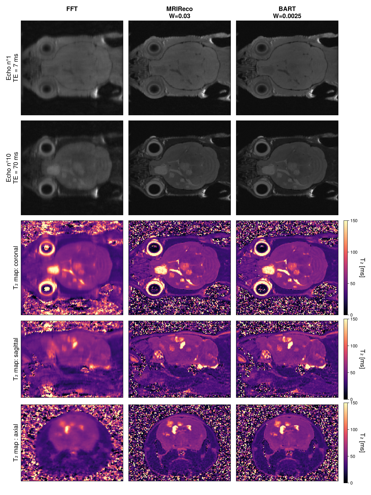

Generate article figure
Description
This example described how to perform a subspace reconstruction for $T_2$ mapping acceleration. This script is also used to generate the last figure of the article.

To do so you need to edit path_raw to the bruker dataset available here and you need to compile bart and edit path_bart to the compiled bart library
Setup and define global variable
using Subspace_MESE
using Subspace_MESE.MRIFiles
using Subspace_MESE.MRIReco
using Subspace_MESE.MRICoilSensitivities
using Subspace_MESE.LinearAlgebra
using Subspace_MESE.FFTW
using CairoMakieDefine the path to the raw dataset
If the folder/file does not exists we are in the github CI environement and we used for the plots the images
path_raw = "/workspace_QMRI/PROJECTS_DATA/2021_RECH_mcT2_Bruker/PROJ_JULIA_MSME_CS/data/exp_raw/mouse_patho/20230317_085834_AT_MSME_CS_44_1_1/10"define the path to the bart library
path_bart = "/home/CODE/bart/bart"
slice_to_show = 55Load and convert the bruker dataset into an AcquisitionData object
b = BrukerFile(path_raw)
raw = RawAcquisitionData_MESE(b)
acq = AcquisitionData(raw,OffsetBruker = true);
nothing #hideEstimate the coil sensitivity map with espirit
coilsens = espirit(acq,eigThresh_2=0.0);
nothing #hideUndersampling Recontruction
params = Dict{Symbol,Any}()
params[:reconSize] = acq.encodingSize
params[:reco] = "direct"
im_u = reconstruction(acq, params);
im_u_sos = mergeChannels(im_u)
heatmap(im_u_sos[:,:,55,15,1,1],colormap=:grays)Generate basis from an EPG simulation
B1_vec = 0.8:0.01:1.0
T2_vec = 1.0:1.0:2000.0
T1_vec = 1000.0
TE = 7.0
TR = 1000.0
dummy=3
ETL = 50
NUM_BASIS = 6
basis_epg,_= MESE_basis_EPG(NUM_BASIS,TE,ETL,T2_vec,B1_vec,T1_vec;TR=TR,dummy=dummy)
lines(abs.(basis_epg[:,2]))Subspace reconstruction with EPG dictionnary
params = Dict{Symbol,Any}()
params[:reconSize] = acq.encodingSize
params[:reco] = "multiCoilMultiEchoSubspace"
params[:regularization] = "L1"
params[:sparseTrafo] = "Wavelet" #sparse trafo
params[:λ] = Float32(0.03)
params[:solver] = "fista"
params[:iterations] = 60
#params[:iterationsInner] = 5
params[:senseMaps] = coilsens
params[:normalizeReg] = true
params[:basis] = basis_epg
α_epg = reconstruction(acq, params)
im_TE_julia = abs.(applySubspace(α_epg, params[:basis]));
nothing #hideBART reco
In order to use BartIO, we need to send the path to the bart library. You can check that it works with the following code
BartIO.set_bart_path("path_bart")
bart()if isfile(path_bart)
using Subspace_MESE.BartIO
params[:λ] = Float32(0.0025)
im_sub_bart,im_TE_bart = subspace_bart_reconstruction(acq,params,path_bart)
end;
nothing #hideFit the data to obtain T₂ maps
TE_vec = Float32.(LinRange(TE,TE*ETL,ETL))
fit_und= Subspace_MESE.T2Fit_exp_noise(abs.(im_u_sos[:,:,slice_to_show,:,1,1]),TE_vec;removePoint=true,L=4)
fit_julia = Subspace_MESE.T2Fit_exp_noise(abs.(im_TE_julia[:,:,slice_to_show,:,1,1]),TE_vec;removePoint=true,L=4)
if isfile(path_bart)
fit_bart = Subspace_MESE.T2Fit_exp_noise(abs.(im_TE_bart[:,:,slice_to_show,1,1,:]),TE_vec;removePoint=true,L=4)
end;
nothing #hideGenerating article figure 8
using CairoMakie.Makie.MakieCore
titlesize=20
ylabelsize=20
aspect = DataAspect()
f=Figure(size=(1200,1000))
#plot echo 1
colorrange=MakieCore.Automatic()
colormap=:grays
ax = Axis(f[1,1];title="FFT\n ",ylabel = "Echo n°1\nTE = 7 ms",titlesize,ylabelsize)
heatmap!(ax,im_u_sos[:,:,slice_to_show,1,1,1];colorrange,colormap)
hidedecorations!(ax,label=false)
ax = Axis(f[1,2];title="MRIReco\nW=0.03",titlesize)
heatmap!(ax,im_TE_julia[:,:,slice_to_show,1,1,1];colorrange,colormap)
hidedecorations!(ax)
if(isfile(path_bart))
ax = Axis(f[1,3];title="BART\nW=0.0025",titlesize)
heatmap!(ax,abs.(im_TE_bart[:,:,slice_to_show,1,1,1]);colorrange,colormap)
hidedecorations!(ax)
end
#plot echo 10
ax = Axis(f[2,1];ylabel = "Echo n°10\nTE = 70 ms",titlesize,ylabelsize)
heatmap!(ax,im_u_sos[:,:,slice_to_show,10,1,1];colorrange,colormap)
hidedecorations!(ax,label=false)
ax = Axis(f[2,2];titlesize)
heatmap!(ax,im_TE_julia[:,:,slice_to_show,10,1,1];colorrange,colormap)
hidedecorations!(ax)
if(isfile(path_bart))
ax = Axis(f[2,3];titlesize)
heatmap!(ax,abs.(im_TE_bart[:,:,slice_to_show,1,1,10]);colorrange,colormap)
hidedecorations!(ax)
end
#plot T2 map
colorrange=(0,150)
colormap=:magma
ax = Axis(f[3,1];ylabel = "T₂ map",titlesize,ylabelsize)
heatmap!(ax,fit_und[:,:,2];colorrange,colormap)
hidedecorations!(ax,label=false)
ax = Axis(f[3,2])
h=heatmap!(ax,fit_julia[:,:,2];colorrange,colormap)
hidedecorations!(ax)
if(isfile(path_bart))
ax = Axis(f[3,3])
heatmap!(ax,fit_bart[:,:,2];colorrange,colormap)
hidedecorations!(ax)
end
Colorbar(f[3,end+1],h,label = "T₂ [ms]",labelrotation=-pi/2,labelsize=20)
f
save("fig_bart_julia.png",f)
save("fig_bart_julia.eps",f)
save("fig_bart_julia.pdf",f)This page was generated using Literate.jl.